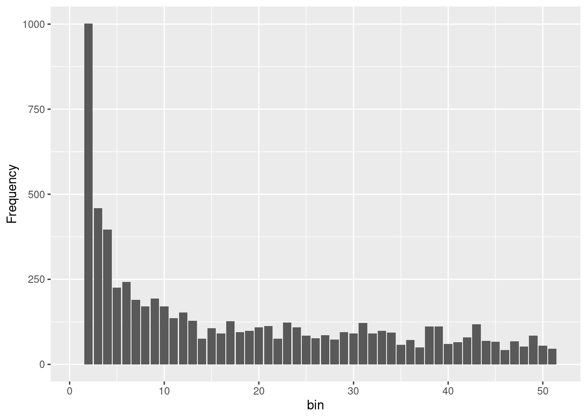
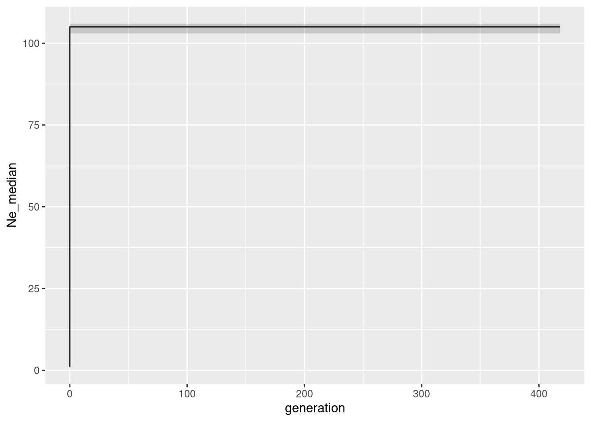
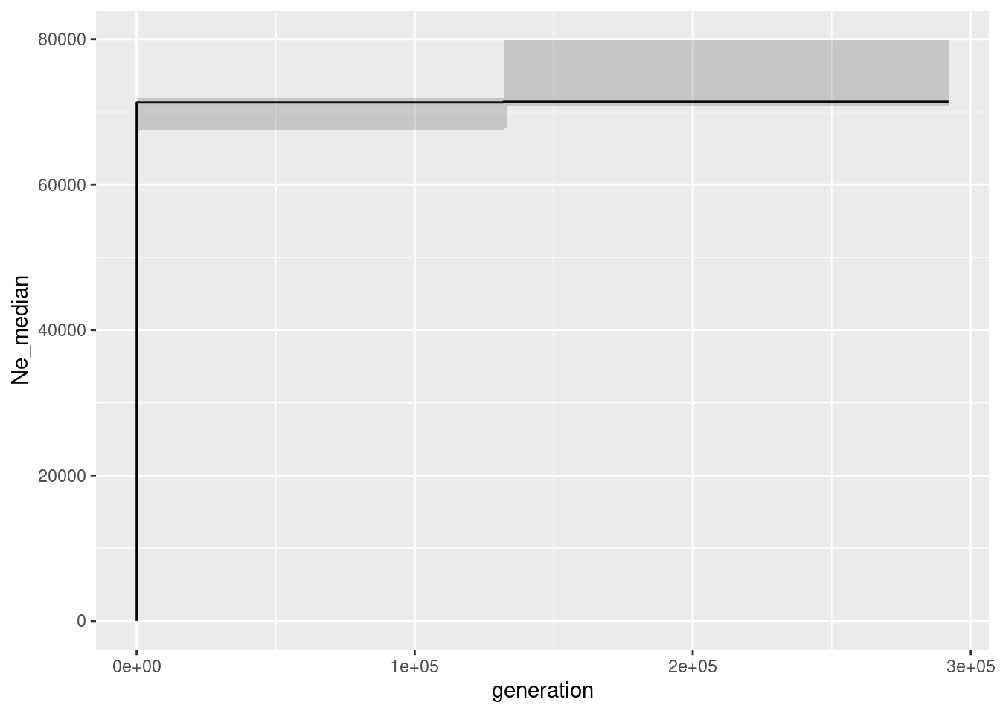

library(dartRverse)
library(ggplot2)
# devtools::install_github('green-striped-gecko/geohippos')
library(geohippos)5 Effective Population Size
Session Presenters

Required packages
Introduction
Ne is important for conservation and management of populations. It is an indicator of the genetic diversity of a population and is used to estimate the probability of extinction.
Effective population size (Ne) is a concept in population genetics that refers to the number of breeding individuals in an idealized population that would show the same amount of genetic drift or inbreeding or linkage disequilbrium or coalescent as the population under study. Unlike the actual census size (Nc), which counts all individuals within a population, Ne focuses on those contributing genes to the next generation, offering a more precise understanding of a population’s genetic health and potential for evolutionary change.
The 50/500 rule is a guideline in conservation biology that relates to the effective population size (Ne) and its implications for the conservation of species. This rule was first proposed by Franklin in 1980 and later expanded by Soule in 1986. It serves as a rule of thumb for determining the minimum viable population sizes needed to prevent inbreeding depression in the short term and maintain evolutionary potential over the long term.
Be aware the 50/500 rule is a rule of thumb and should be used with caution. It is not a one-size-fits-all rule and should be used in conjunction with other information about the species and its habitat. It has been criticized for being too simplistic and not taking into account the specific needs of individual species.
1. Current effective population size
Carlo
2. Historic effective population size
Based on SFS
The Site Frequency Spectrum (SFS), sometimes referred to as the allele frequency spectrum, is a fundamental concept in population genetics that describes the distribution of allele frequencies at polymorphic sites within a sample of DNA sequences from a population. It provides a powerful summary of the genetic variation present in the population, capturing information about the history of mutations, demographic events (such as population expansions or bottlenecks). There are several methods to estimate historic, but we explore only two here: Epos Lynch et al. (2019) and Stairways2 Liu and Fu (2020)
The SFS
It is straight forward to create the sfs from a genlight/dartR object. But first you want to make sure you do not have missing data in your dataset, because the allele frequency spectrum is sensitive to missing data.
# Load the data
gl100 <- readRDS("./data/slim_100.rds")
# check the population size and number of populations
table(pop(gl100))
A
50 # number of individuals
nInd(gl100)[1] 50# number of loci
nLoc(gl100)[1] 10645# create
sfscon <- gl.sfs(gl100, folded = TRUE)Starting gl.sfs
Processing genlight object with SNP dataCompleted: gl.sfs sfscon d0 d1 d2 d3 d4 d5 d6 d7 d8 d9 d10 d11 d12 d13 d14 d15
10 1924 1188 676 557 408 400 260 249 254 238 200 179 186 195 170
d16 d17 d18 d19 d20 d21 d22 d23 d24 d25 d26 d27 d28 d29 d30 d31
180 115 170 122 138 127 142 99 105 109 110 95 106 112 88 85
d32 d33 d34 d35 d36 d37 d38 d39 d40 d41 d42 d43 d44 d45 d46 d47
89 80 100 91 60 96 97 88 111 81 72 86 85 57 91 110
d48 d49 d50
90 114 50 As you can see the is simply a table of the number of alleles at each frequency. Be aware the the sfs is folded by default, but you can change this with the argument folded = FALSE. In most of the cases we will use the folded=TRUE option as you need phased data to use the unfolded sfs (and also have an idea which state is the ancestral one. Often the genomic of an ancestral outgroup is used for this information).
Exercise 1: Parameter in gl.sfs
 Try different settings for the sfs and see what happens. There are three important parameters:
Try different settings for the sfs and see what happens. There are three important parameters:
minbinsize(default is 1)folded(default is TRUE)singlepop(default is TRUE) [if you have more than one population in your genlight object]
# unfolded sfs
un.sfs <- gl.sfs(gl100, folded = FALSE)Starting gl.sfs
Processing genlight object with SNP data
Completed: gl.sfs un.sfs d0 d1 d2 d3 d4 d5 d6 d7 d8 d9 d10 d11 d12 d13 d14 d15
0 1913 1144 649 540 392 368 250 231 229 216 182 163 163 149 152
d16 d17 d18 d19 d20 d21 d22 d23 d24 d25 d26 d27 d28 d29 d30 d31
141 103 138 106 108 102 110 81 83 82 88 74 83 86 60 63
d32 d33 d34 d35 d36 d37 d38 d39 d40 d41 d42 d43 d44 d45 d46 d47
48 59 62 61 38 58 68 55 66 51 42 54 49 26 54 49
d48 d49 d50 d51 d52 d53 d54 d55 d56 d57 d58 d59 d60 d61 d62 d63
54 65 50 49 36 61 37 31 36 32 30 30 45 33 29 38
d64 d65 d66 d67 d68 d69 d70 d71 d72 d73 d74 d75 d76 d77 d78 d79
22 30 38 21 41 22 28 26 23 21 22 27 22 18 32 25
d80 d81 d82 d83 d84 d85 d86 d87 d88 d89 d90 d91 d92 d93 d94 d95
30 16 32 12 39 18 46 23 16 18 22 25 18 10 32 16
d96 d97 d98 d99 d100
17 27 44 11 10 In addition it is possible to create multidimensional sfs, which is useful for example when you have multiple populations (in case you want to have that use: singlepop=FALSE). Be aware if you want to create and multidimensional sfs from more than say 3 populations a 30 individuals you create a huge array of dimensions (61 x 61 x 61), with mainly zeros. So often multidemensional sfs are not very useful.
So lets have a closer look at the folder sfs from the example. The simulated population had a constant (effective) population size Ne of 100 individuals. Hence we know from theory that we have to expect a sfs that follows an exponential distribution.
We now load two more data sets:
gldec <- readRDS("./data/slim_100_50_50yago.rds")
glinc <- readRDS("./data/slim_100_200_50yago.rds")
glbottle <- readRDS("./data/slim_100_10_50_50yago_10year.rds")gldec is a population that experienced a decline from Ne=100 to Ne=50 50 years ago, while glinc is a population that experienced an increase from Ne=100 to Ne=200 50 years ago. And glbottle is a data set that experienced a bottleneck from Ne=100 to Ne=10 50 years ago and then an increase to Ne=50 after years.
Exercise 2: Compare SFS
 Create a SFS for the three new datasets and compare them to the SFS of the constant population. What do you expect?
Create a SFS for the three new datasets and compare them to the SFS of the constant population. What do you expect?
Below is a plot that shows all four SFS.
sfsdec <- gl.sfs(gldec, folded = TRUE)Starting gl.sfs
Processing genlight object with SNP data
Completed: gl.sfs sfsinc <- gl.sfs(glinc, folded = TRUE)Starting gl.sfs
Processing genlight object with SNP dataCompleted: gl.sfs sfsbottle <- gl.sfs(glbottle, folded = TRUE)Starting gl.sfs
Processing genlight object with SNP dataCompleted: gl.sfs Examples for different sfs (simulated)
df <- data.frame(x = 0:50, sfscon, sfsdec, sfsinc, sfsbottle)
g1 <- ggplot(df, aes(x = x, y = sfscon)) + geom_bar(stat = "identity")
g2 <- ggplot(df, aes(x = x, y = sfsdec)) + geom_bar(stat = "identity")
g3 <- ggplot(df, aes(x = x, y = sfsinc)) + geom_bar(stat = "identity")
g4 <- ggplot(df, aes(x = x, y = sfsbottle)) + geom_bar(stat = "identity")
g1 + g2 + g3 + g4
As you can see it is not really possible to see the differences between the sfs, so lets check how good our methods are to recreate the historic population sizes.
Epos
Lets start with the simple one and lets use Epos (as this is the fastest method). A typical epos run requires the genlight/dartR object, then the path to the epos binary.
There are two more important parameters l and mu. l is the total lenght of the “sampled” chromosome and we will have a discussion on that. mu is the mutation rate per site per generation. The important concept to keep in mind is that:
\[\LARGE x = mu \times L \times 2 \times Ne \] , where x is the number of mutations in a generation.
So to be able to estimate the trajectory in an absolute sense we need to know L and mu. In a simulation that is easy because we know how long the chromosome(s) were we did our simulation on. Here L=5e8 and mu was set to a value of 1e-8.
We could provide the sfs, but the gl.epos function does take care of that in case none is provided (it call gl.sfs). Additional parameters in EPOS are the number of bootstraps that should be run for confidence intervalas (the more the more runs and the longer it takes) and the minimum bins size. Here we use minbinsize=1 (the default), because we have simulated data and also trust our low frequency bins. In a real data set you might want to change that to higer values, though if too high you might delete too much information from your data (the first bins have the highest number of entries and therefore should be the most informative ones).
L <- 5e+08
mu = 1e-08
# forgive me but you need to name 'L' as little l in the function call.
# will be corrected in the ne
Ne_epos <- gl.epos(gl100, epos.path = "./binaries/", l = L, u = mu, boot = 10,
minbinsize = 1) Processing genlight object with SNP datacolnames(Ne_epos) <- c("generation", "low", "Ne_median", "high")
ggplot(Ne_epos, aes(x = generation, y = Ne_median)) + geom_line() + geom_ribbon(aes(ymin = low,
ymax = high), alpha = 0.2)As you might remember the population size was constant at 100 individuals. So we expect the Ne to be 100 for all generations. And indeed the median is 100 for allmost all generations. The confidence intervals are very narrow, which is expected as we have simulated this data set. There is little bit disturbing ‘dip’ at really low population sizes. This hints to the known limitation that in very recent times there had not been enough mutations to estimate the population size correctly.
Before we go on with the other data sets (fairly easy to run, just replace the gl100 with the other data sets) we should discuss the parameter l and mu. The l parameter is the length of the chromosome that was sampled. In a real data set you might not know that, because this depends on your methods, the amount of filters etc. Hence the question is what happens if you set l wrong. Lets test set and set L to an often used value: number of loci times 69 (because in a dart analysis we get 69 bases of sequence hence that sounds like a reasonable idea).
L <- 69 * nLoc(gl100) #734505
mu = 1e-08
Ne_epos <- gl.epos(gl100, epos.path = "./binaries/", l = L, u = mu, boot = 10,
minbinsize = 1) Processing genlight object with SNP datacolnames(Ne_epos) <- c("generation", "low", "Ne_median", "high")
ggplot(Ne_epos, aes(x = generation, y = Ne_median)) + geom_line() + geom_ribbon(aes(ymin = low,
ymax = high), alpha = 0.2)As you can see this is not a good idea the axis values are completely off. The reason is that the number of mutations is calculated as L * mu * Ne. So if you set L too low, you will get a too high Ne (and also the number of generations are off). If you set L too high, you will get a too low Ne. So you need to know the length of the chromosome that you are working with. The good news is that the trajectory is still correct, so we can rely on the shape of the curve, but the absolute values are wrong if L (or mu) are set incorrectly.
Exercise 3: Run Epos for different combinations of L and mu
 You can now run epos for different combinations of L and mu. What do you expect if you set L and mu in such a way that L * mu compensate each other?
You can now run epos for different combinations of L and mu. What do you expect if you set L and mu in such a way that L * mu compensate each other?
Exercise 4: Run Epos for all data sets
 And now to the next exercise which is the more intersting one: run Epos for all four data sets data sets(glcon, glinc, gldec, glbottle) and compare the results to the simulated trajectories. Once finished you can have a look at the code below.
And now to the next exercise which is the more intersting one: run Epos for all four data sets data sets(glcon, glinc, gldec, glbottle) and compare the results to the simulated trajectories. Once finished you can have a look at the code below.
L <- 5e+08
mu = 1e-08
# constant
Ne_epos <- gl.epos(gl100, epos.path = "./binaries", l = L, u = mu, boot = 10,
minbinsize = 1) Processing genlight object with SNP datacolnames(Ne_epos) <- c("generation", "low", "Ne_median", "high")
pcon <- ggplot(Ne_epos, aes(x = generation, y = Ne_median)) + geom_line() +
geom_ribbon(aes(ymin = low, ymax = high), alpha = 0.2)
# constant
Ne_epos <- gl.epos(glinc, epos.path = "./binaries", l = L, u = mu, boot = 10,
minbinsize = 1) Processing genlight object with SNP datacolnames(Ne_epos) <- c("generation", "low", "Ne_median", "high")
pinc <- ggplot(Ne_epos, aes(x = generation, y = Ne_median)) + geom_line() +
geom_ribbon(aes(ymin = low, ymax = high), alpha = 0.2)
# constant
Ne_epos <- gl.epos(gldec, epos.path = "./binaries", l = L, u = mu, boot = 10,
minbinsize = 1) Processing genlight object with SNP datacolnames(Ne_epos) <- c("generation", "low", "Ne_median", "high")
pdec <- ggplot(Ne_epos, aes(x = generation, y = Ne_median)) + geom_line() +
geom_ribbon(aes(ymin = low, ymax = high), alpha = 0.2) + ylim(c(0, 200))
# constant
Ne_epos <- gl.epos(glbottle, epos.path = "./binaries", l = L, u = mu, boot = 10,
minbinsize = 1) Processing genlight object with SNP datacolnames(Ne_epos) <- c("generation", "low", "Ne_median", "high")
pbottle <- ggplot(Ne_epos, aes(x = generation, y = Ne_median)) + geom_line() +
geom_ribbon(aes(ymin = low, ymax = high), alpha = 0.2)And now we can plot them next all in one go:
pcon + pinc + pdec + pbottle
Pretty good, or what do you think?
Stairways2
Stairways is the actually more popular mehtod to estimate the historic population sizes from SNPs. The reason is most likely that EPOS was implemented in a way that makes it really hard to run for a not initiated person (you need to compile c++ and run some commands in GO). The upshot in Epos is that is it much much faster and the results are not too different to stairways. Nevertheless, we will have a go with stairways below.
The good new is that stairways uses the identical input parameters: L, mu, minbinsize. Hence nothing new here an it “suffers” therefore from the same problem if we do not know mu of L the trajectory is okay, but the absolute values on the axis are off.
The main difference (and here I admit I have to resort to a general explanation as it is beyond my paygrade to understand). Epos uses a simple semi-analytical optimization method to find the best fitting trajectory, whereas stairways uses a machine learning approach that takes longer (but potentially explores the parameter space better). My current approach is to use both methods and see if the results are similar.
Example run of Stairways2
L <- 5e+08
mu = 1e-08
# takes about 5 minutes so not run here Ne_sw <- gl.stairway2(gl100,
# stairway.path='./binaries', mu = mu, gentime = 1, run=TRUE, nreps =
# 30, parallel=10, L=L, minbinsize =1)
Ne_sw <- readRDS("./data/Ne_sw_gl100.rds")
ggplot(Ne_sw, aes(x = year, y = Ne_median)) + geom_line() + geom_ribbon(aes(ymin = Ne_2.5.,
ymax = Ne_97.5.), alpha = 0.2)
Exercise
 Now that you have learned to run Epos and Stairways, perhaps try to run your own data sets or use the ones provided.
Now that you have learned to run Epos and Stairways, perhaps try to run your own data sets or use the ones provided.
Foxes in Australia (foxes.rds) Crocodiles in Australia (crocs.rds)
You can also try to run the simulator to explore how good the methods are for more complicated demographic histories. [slim simulator]
Gone
[Needs more implementation and testing, but I will give a brief overview here.] [Be aware Gone is very data hungry and seems not to work too well with the number of SNPs we have at our disposal, but in simulations with Ne~1000 and lots of individuals it seems to work well].
Gone is a very different method to estimate the population size. It was developed by Santiago et al. (2020). The authors utilize LD patterns to infer the demographic history of populations. LD can be affected by various factors including recombination, mutation, genetic drift, and population structure. The method is based on the idea that the LD decay is a function of the population size and the recombination rate. So we need next to our SNP data also a so called linkage map. This can be achieved if you have a reference genome available and you can map the SNPs to the reference genome. Gone itself has not been tested to much for recent population sizes and is still very much under research about its usefullness for recent population sizes.
Below is an implementation to run Gone using the dartRverse, but be aware it has not been much tested. We certainly can run Gone using our simulated data (because we simulted 5 chromosomes and we have a full map of them on those chromosomes).
To see that we can check how many snps we have on the chromosomes in our data sets.
table(gl100@chromosome)
1 2 3 4 5
2252 2130 2132 2229 1902 So lets run Gone (be aware it is not very userfriendly implemented yet in terms of the settings. Gone currently a script file that is hidden within the script_GONE.sh file and you need to edit it there to change it from the defaults.
Explain the settings (important MAF)
# take a bit long Ne_gone <- gl.gone(gl100,gone.path = './binaries')
# #runs parallel via InputParamters load it instead
Ne_gone <- readRDS("./data/Ne_gone_100.rds")
colnames(Ne_gone) <- c("generation", "Ne_mean")
ggplot(Ne_gone, aes(x = generation, y = Ne_mean)) + geom_line()
Pretty terrible I guess. My first findings indicate the Gone is much more data hungry and works better with much more SNPs, more chromosomes and more individuals. There is a data set I available using 5 chromosomes (but twice in length) and 100 indivduals (being stable all the time)
The plot is below:
glgone100 <- readRDS("./data/slimgone_100.rds")
# Ne_gone <- gl.gone(gl100,gone.path =
# 'd:/bernd/r/geohippos/binaries/gone/windows/') #runs parallel via
# InputParamters takes too long
Ne_gone <- readRDS("./data/Ne_gone_100.rds")
colnames(Ne_gone) <- c("generation", "Ne_mean")
ggplot(Ne_gone, aes(x = generation, y = Ne_mean)) + geom_line()
It is certainly possible that gone is “saveable” but it is obvious that Gone is not very “good” in recent years. There seems to be a sweet spot where Gone works well >100 Generations and <300 generations, but that needs more testing.
Exercise
 Now that you have learned to run Gone perhaps try to run your own data sets or use the ones provided.
Now that you have learned to run Gone perhaps try to run your own data sets or use the ones provided.
You can also try to run the simulator to explore how good the methods are for more complicated demographic histories. [slim simulator]
We hope you have fun runnig the code and please do not hesitate to ask questions or provide feedback.
Cheers, Carlo & Bernd